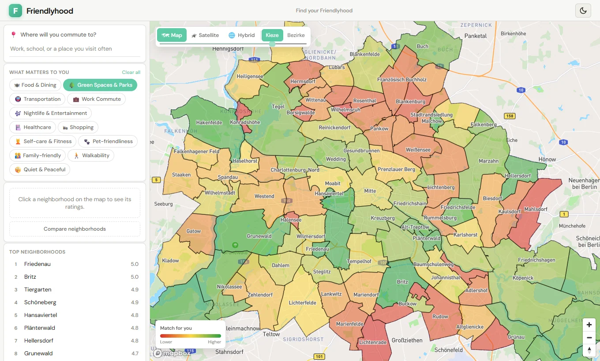
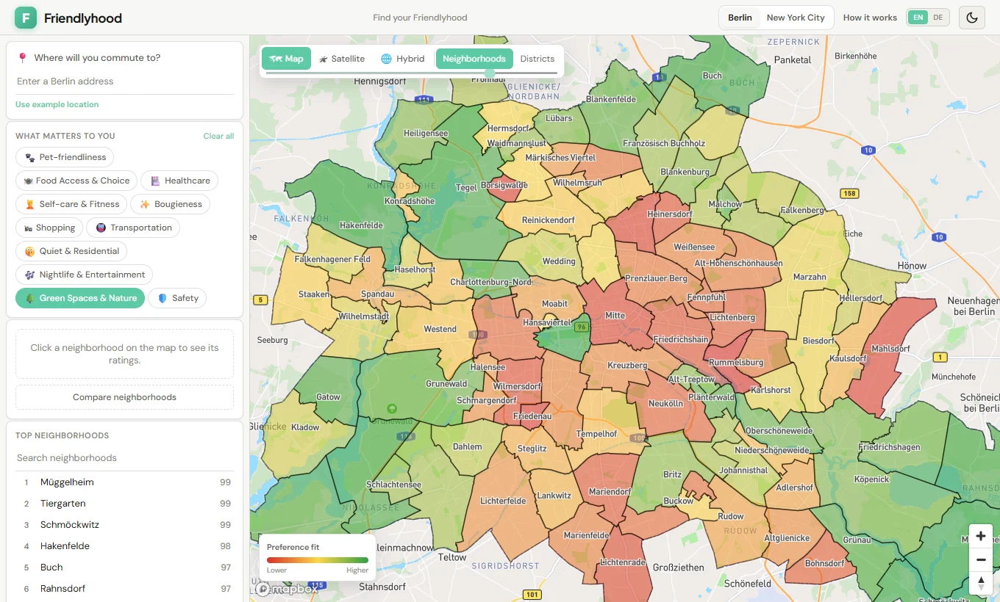
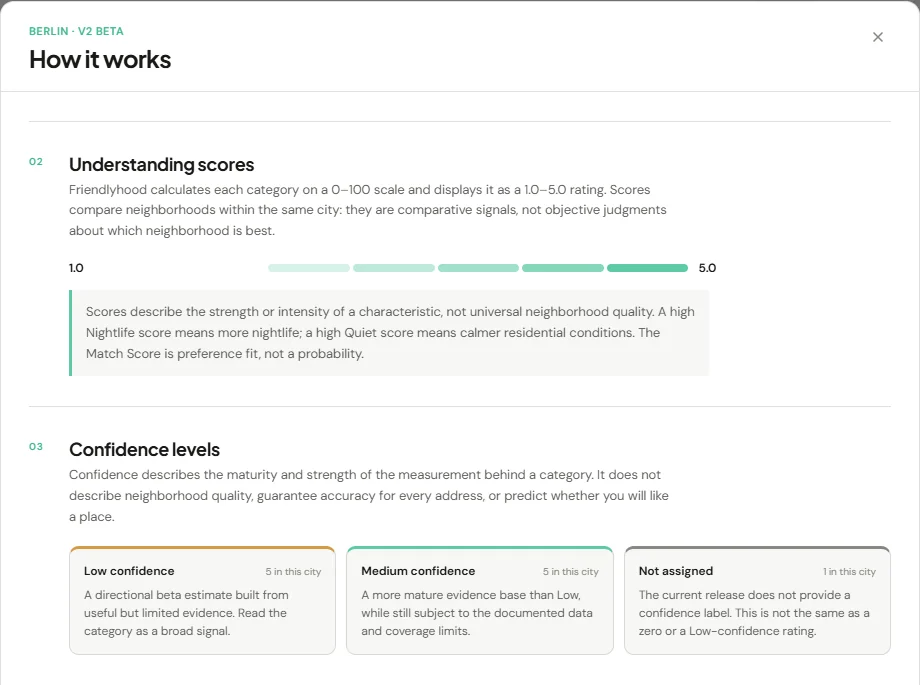
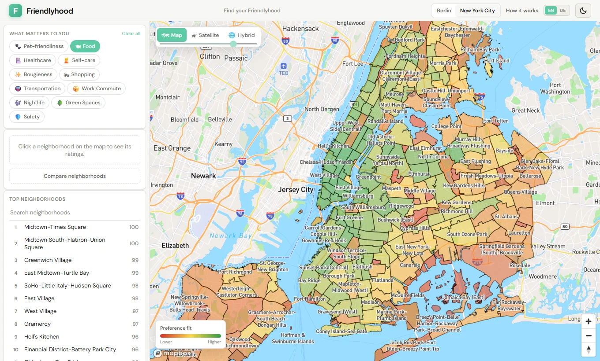
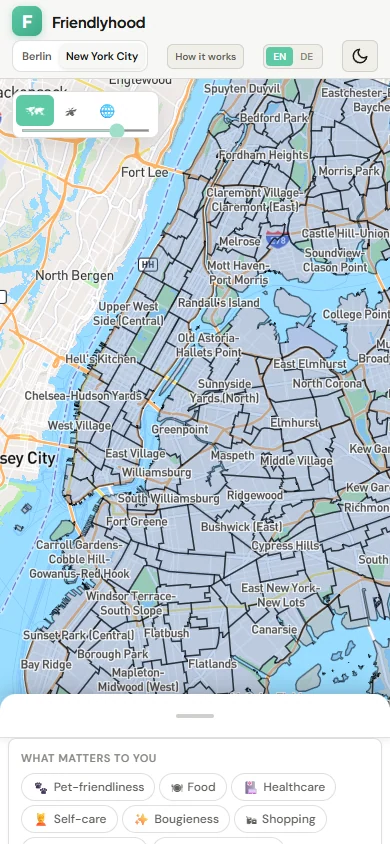

Friendlyhood
Where should I live?
Friendlyhood began as a personal project to learn backend development: APIs, databases, and how real-world data moves through a product. At the time, I was considering an EMBA in Berlin, so I gave that learning a question I actually cared about: where would I live if I moved there? I ultimately decided not to pursue the program, but the project had already led to a harder and much more interesting question: how do you put a number on a place without pretending the number is the whole truth?
The beginning
A map made the question feel answerable.
I was exploring a move to Berlin and wanted a way to compare neighborhoods against the things that mattered to me. The first version had a map, category filters, a commute input, and a ranked list. Pick a priority and the colors changed.
It was useful for exploration. It was also easy to read too much into. The early data leaned heavily on OpenStreetMap points of interest and city-relative ranks. A bright patch on the map looked precise even when the underlying category was a rough proxy. The interface made comparison easy before I had made its limits equally easy to understand.

a5d9629, before the published V2 methodology.
This is the actual interface, rendered from that commit.Berlin V2 Beta
The ratings needed a method, not just a legend.
Berlin's V2 release moved to 97 official neighborhood geometries and 11 characteristics. Its published ratings join those areas by stable IDs and combine documented Berlin, transit, and OpenStreetMap evidence. The scores are generated offline; changing a preference in the browser does not quietly recalculate the source data.
I also had to separate two ideas that are easy to collapse: a category score describes a characteristic, while the preference-fit number reflects what someone selected. More nightlife is not a universally “better” neighborhood. The map can help you ask better questions; it cannot decide where you should live.

What a number means
Confidence belongs next to the score.
The methodology became part of the product, with source roles, component weights, limitations, and confidence labels available in the interface. In Berlin V2, five categories are marked Low confidence, five Medium, and Safety has no assigned confidence label. “Not assigned” is a missing claim, not a reassuring synonym for Medium.
A high score is not proof that a street is right for you. It describes a city-relative signal at neighborhood scale. The confidence label describes the evidence behind that signal, not the probability that you will like living there.

The next method
The data work got more explicit. The scores did not get a free pass.
V3 is a separate, unfinished methodology and pipeline. It records the route from a raw snapshot through a
source manifest, deterministic transformation, component metric, and frozen city baseline to a score.
Schemas, validation, acquisition receipts, and tests make that route inspectable. The Berlin V3 score
artifact is still marked not_generated and publishable: false; the live Berlin
experience uses V2.
I split the V3 specification into a city-independent Core and city-specific bindings. Core defines what a category means and how it is calculated. Each city must supply suitable geography, sources, mappings, and a normalization baseline. That separation mattered as soon as I tried a second city.
New York City
A second city made the gaps harder to ignore.
NYC started with official 2020 Neighborhood Tabulation Area geography: 262 areas, including parks, airports, and other places nobody should mistake for residential recommendations. City-specific V3 research and foundation work followed, but the binding still records unapproved choices such as the residential area selection, analysis coordinate system, and population sampling. Those are not small blanks to fill with vibes.
To keep the city explorable, I made a separate NYC MVP proxy release. It uses disclosed public-data density proxies across 11 categories, with every category explicitly Low confidence. The proxies are deterministic and city-relative, but they do not activate canonical V3 or claim to measure everything the V3 categories intend. For example, the Food proxy reflects restaurant supply, not the full grocery-access and quality model.

Building it
I tried a stricter way of working with agents.
For part of the V3 work, I set up specialized Codex roles. Research gathered evidence and gaps. A Methodology Steward classified proposals against the approved rules. Implementation worked from explicitly approved scope. Audit checked the result against the method, the work order, and actual behavior. I kept Product Owner authority over methodology changes and approvals.
The useful rule was a stopping rule: when the approved method did not determine a needed value, implementation was supposed to stop and return the question. A nightlife diversity work order even named the unresolved catchment, class mapping, deduplication, and completeness choices rather than letting code invent them. The experiment made uncertainty visible in the workflow. It did not make the agents a permanent product architecture.
Validation also moved beyond the happy path. The repository checks data joins, scoring behavior, and interface flows; later reliability work added recovery for map and storage failures, a selectable basic map when the richer map cannot start, and more usable search and mobile layouts. A passing test cannot make a weak proxy strong, but it can catch a broken release.

Still in progress
A better question, with a more honest answer.
Friendlyhood now lets me compare neighborhoods in two cities and inspect more of the evidence behind the colors. It is still a personal product in progress. Berlin V2 is a beta release. NYC's current ratings are low-confidence proxies. Canonical V3 remains incomplete until its sources, city decisions, baselines, and quality gates are resolved.
I still want the map to make exploration easier. I just want it to be equally clear where the map should stop talking.